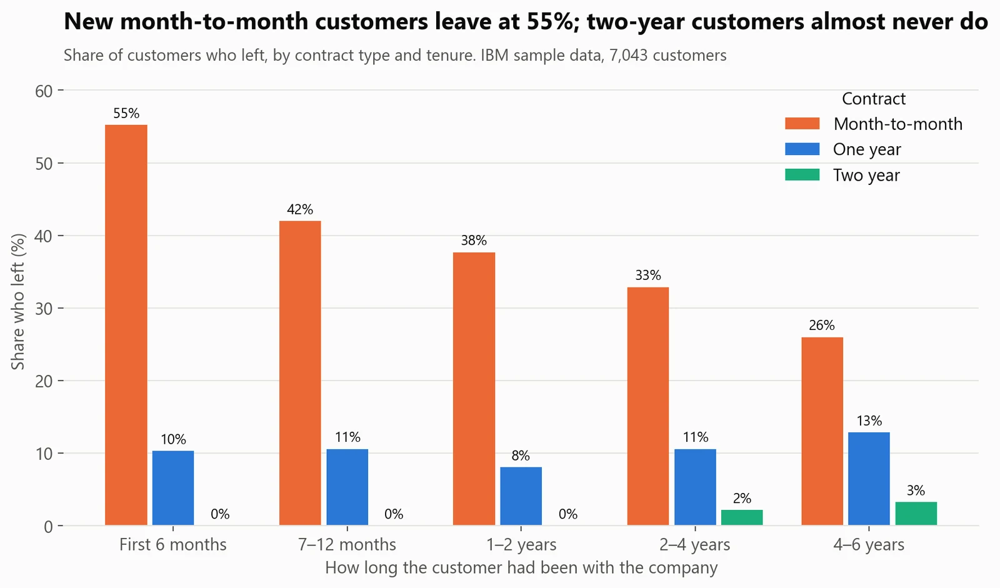
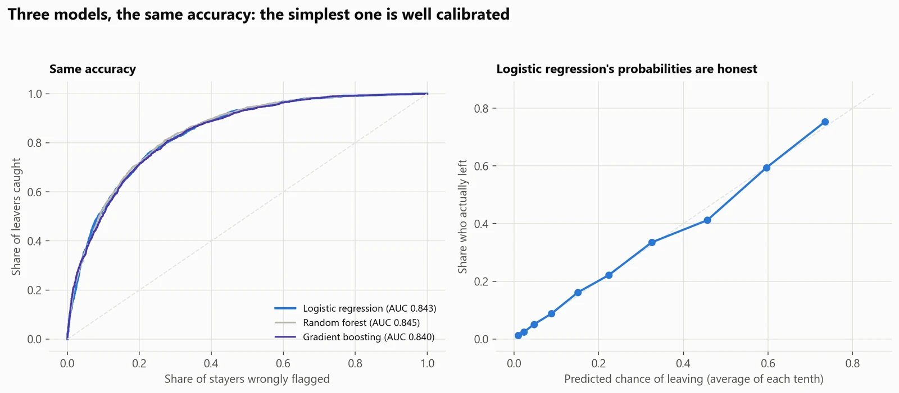
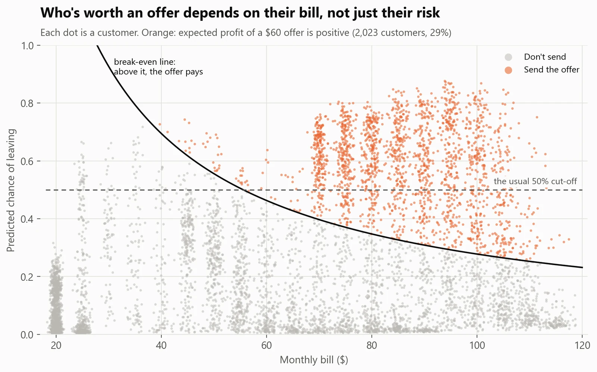
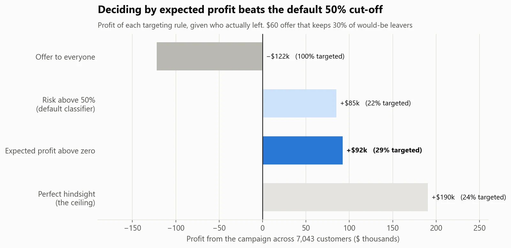
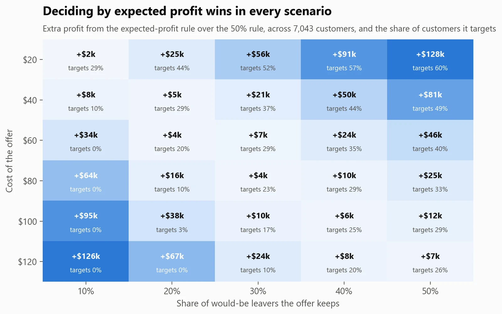

Work/PRJ-02/Customer analytics · Telecom
Who will cancel, and who's worth saving?
Don't send the retention offer to everyone the model flags. With a $60 offer that keeps 30% of would-be leavers, offering it to everyone loses $122,000, and the usual 'risk above 50%' rule earns $85,000. Targeting only customers whose expected profit is positive (risk × chance the offer works × value of their bill) earns $92,000, and that rule wins across all 30 cost and success scenarios tested.
- Data
- IBM's sample data for a fictional telecom company, 7,043 customers
- Methods
- Classification, calibration, permutation importance, profit-based decisions
- Tools
- Python: scikit-learn, pandas; SQL (DuckDB); unit tests
- Code
- github.com/BoredMongoose/telco-churn-profit ↗
Which customers should get a retention offer?
Send the offer to the 29% of customers whose expected profit is positive: almost all are on month-to-month fibre plans paying $70+ a month, and 57% of them did leave (against 26.5% overall).
Profit from one targeted campaign, against −$122k for offering it to everyone (simulated: $60 offer that keeps 30% of would-be leavers).
Try it: change the offer's cost and success rate, filter the customers, and download who to contact.
Open the live dashboard →01Results
New month-to-month customers are the risk.





02How I did it
From raw data to a decision.
- Explored churn by segment in SQL (contract × tenure with ROLLUP subtotals, revenue at risk) after 7 data checks.
- Compared logistic regression, random forest and gradient boosting on out-of-fold predictions (5-fold cross-validation), then kept the simplest, best-calibrated model. I dropped total billed, which is mostly tenure × bill and only blurred the explanations.
- Turned probabilities into decisions with explicit economics: offer cost, success rate, months kept and margin, all in one place, with unit tests on the profit maths.
- Delivered a ranked list for the retention team with each customer's risk, the expected profit of contacting them, and the two main reasons the model flags them.
03What could make this wrong
The limits, said out loud.
- 01It's sample data for a fictional company: realistic patterns, not a real business.
- 02The offer's cost and success rate are assumptions. A real campaign should measure them with a holdout group first.
- 03The data is a snapshot, so it can't say when a customer will leave.
04What I learned
- 01A good AUC doesn't make a good decision. The cut-off has to come from the economics of the offer, not from 50%.
- 02Calibration matters as soon as probabilities get multiplied by money, which is why I kept the logistic regression over a slightly higher-scoring random forest.
- 03Simple models are easier to defend in a meeting: every prediction comes with two plain-English reasons.
05What I'd do next
- 01Run the offer as an A/B test with a holdout group, to measure the real success rate before scaling it up.
- 02Score active customers every month and check that the risk ranking holds on new data.
- 03Model when customers leave (survival analysis), so the offer arrives before they decide.
- 04Replace the flat 12-month value with each customer's lifetime value.